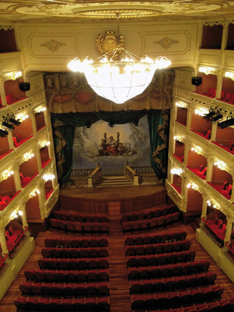
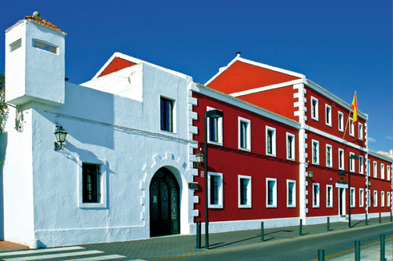
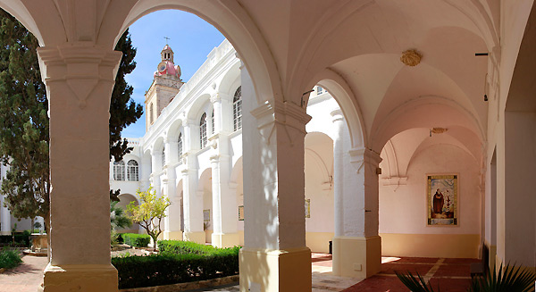

Menorca, una rica cultura
Menorca es mucho más que sol y playa. La isla ha sido durante siglos un hervidero de culturas y civilizaciones, conformando a lo largo de los tiempos un mosaico que ha perfilado la Menorca actual, una isla con una gran riqueza cultural, mucha más de lo que pudiera parecer.
Los primeros habitantes de la Isla ya dejaron su huella. El patrimonio arqueológico menorquín es increíble. Navetas, talayots o taules poblan muchos rincones de la Isla, y nos recuerdan cómo comenzó todo. Piérdase por un yacimiento e imagínese la vida siglos atrás.
Siglo tras siglo, Menorca ha ido creciendo culturalmente. Ingleses, franceses, españoles... Sus presencias en la isla le han otorgado este aire multicultural que aún hoy conserva y potencia. Menorca está repleta de atractivos culturales. En su agenda no puede faltar una visita al Museo de Menorca (Maó) o al Museo Municipal de Ciutadella. También tiene la oportunidad de descubrir el pasado de la Isla en el Museo Militar de Es Castell, o visitando el Fort Marlborough o la impresionante fortaleza de La Mola, en Maó. El Museo Diocesano de Ciutadella alberga también una notable cantidad de obras de arte, que suman su encanto al del edificio que las acoge. La oferta es mucho más extensa. Merece la pena informarse.
Y si Menorca cuenta con una joya cultural, esta es sin duda el Teatro Principal de Maó. El teatro de ópera más antiguo de España fue levantado en el año 1829, y tras sucesivas reformas y ampliaciones, es a día de hoy un espacio moderno y sumamente cuidado para acoger las más diversas artes escénicas. Conserva su esencia, el carácter que en el siglo XIX le otorgó el empresario de ópera Giovanni Palagi. Tiene capacidad para unas mil personas distribuidas en una sala en forma de herradura, sobre la que se levantan tres pisos de palcos más el gallinero. Por fuera, la piedra del país le da ese toque indiscutiblemente menorquín y, por dentro, la reforma proyectada por unos arquitectos -también menorquines- combina la modernidad con el respeto por lo tradicional. En los últimos años se ha consolidado como uno de los principales motores culturales de la Isla. Periódicamente acoge representaciones de todo tipo. Consulte la cartelera, seguro que encuentra algo de su agrado.
Pero la Isla ofrece mucho más. Sorprende la gran cantidad de entidades culturales que trabajan en Menorca, cultivando las más diversas artes y modalidades. Sobre todo en verano, encontrará usted en la Isla una gran cantidad de actividades que le cautivarán. No se vaya de la Isla sin ver los bailes tradicionales, o sin presenciar alguna de las múltiples actuaciones musicales que se programan en los meses veraniegos.
Ya ve, Menorca es mucho más que sol y playa. Aquí se cultiva la buena vida, y ya se sabe que no hay cuerpo sano sin mente sana.